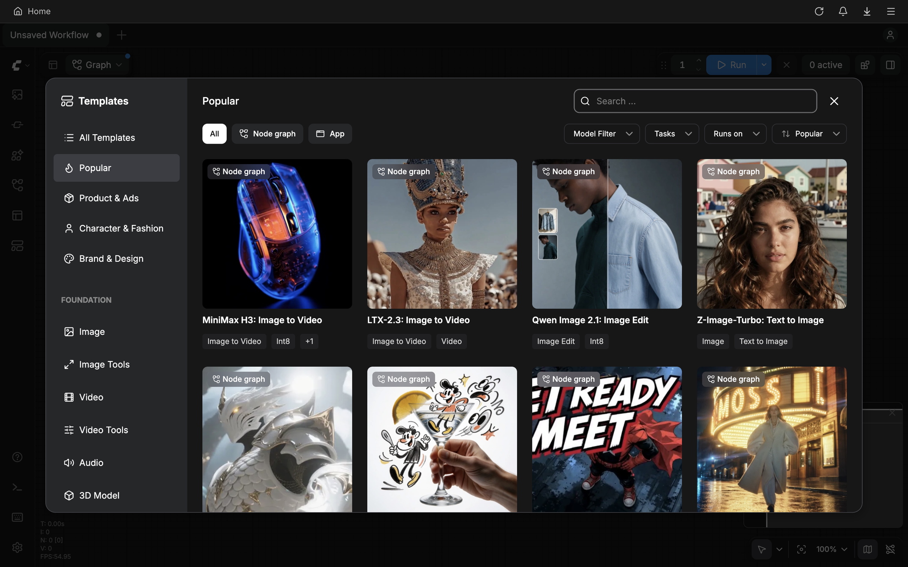
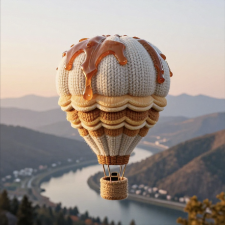
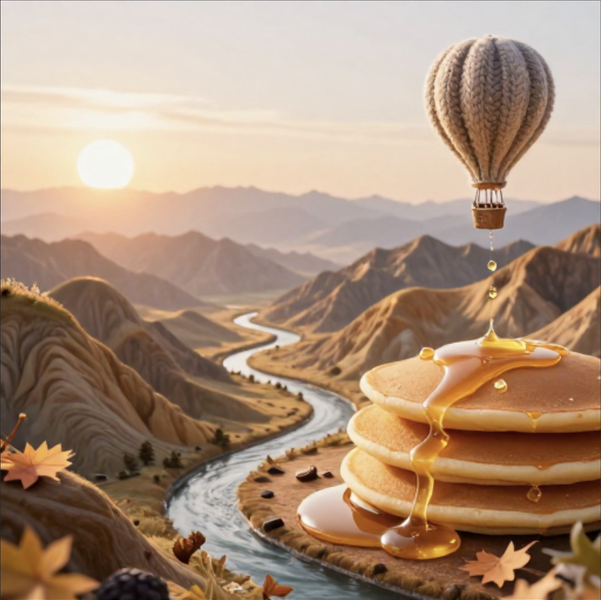
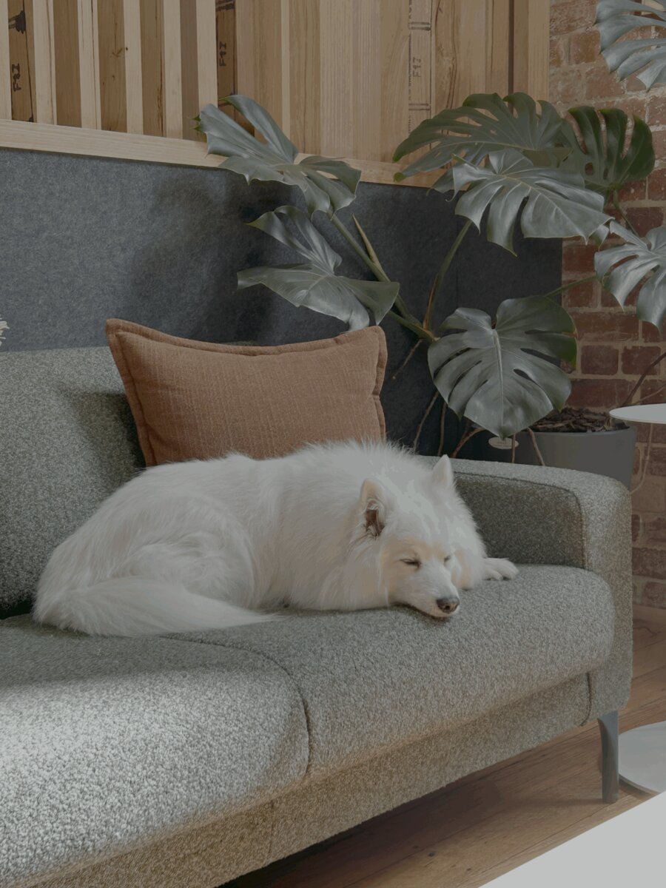
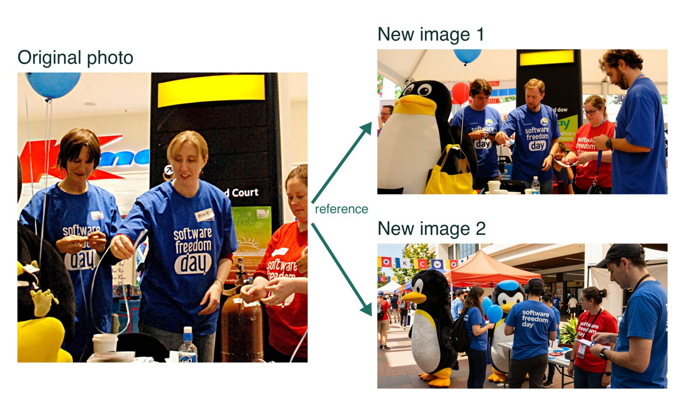

Make AI Images
Offline
on your laptop, with ComfyUI
Sophie Allen · localAI
Sunday 22 November 2026 · Inspire9 Richmond
In this workshop
- Install ComfyUI
- Local vs online AI
- Models for your machine
- Text to image
- Edit an image
- Image from reference
Everything is on the website
localai.xdeca.com/events/
localai-workshop-image-generation
- These slides
- The step by step printout
- The workflows to open in ComfyUI
Download ComfyUI
comfy.org/download
Mac
Apple Silicon (M1 or newer)
macOS 13 or newer
Windows
Windows 10 or newer
NVIDIA or AMD graphics card helps
Linux
.deb for Ubuntu and Debian
AppImage for everything else
All need 8 GB of memory (16 GB is better) and about 10 GB free.
First launch: one screen
- 1Tick I agreeThe EULA and Terms of Service. Required.
- 2Leave these two untickedUsage data and beta features are optional.
- 3Click InstallAbout 773 MB on a Mac. Around 5 minutes.
While it installs: local vs online
| Online | Local (today) |
|---|
| Runs on | Their servers | Your laptop |
| Your photos | Uploaded to them | Never leave your laptop |
| Internet | Always needed | Not needed |
| Cost | Subscription or credits | Free |
| Speed | Seconds | Minutes, depends on your laptop |
What is ComfyUI?
- Free and open source
- Boxes joined by wires: each box does one job
- Swap any part: models, steps, add-ons
- Templates make it simple: pick one, press Run

Copy the models
USB stick: models
- diffusion_models
- text_encoders
- vae
- upscale_models
→
ComfyUI-Shared/models
- diffusion_models
- text_encoders
- vae
- upscale_models
Mac, Linux~/ComfyUI-Shared/models
Windows%LOCALAPPDATA%\Comfy-Desktop\ComfyUI-Shared\models
Add GGUF support
- 1Open the Nodes ManagerTop right, the squares icon.
- 2Search gguf
- 3Install ComfyUI-GGUFBy city96. Then Apply changes to restart.
Open the workflow
Drag z-image-text-to-image.json from the USB stick onto ComfyUI.
- A workflow is boxes joined by wires
- Each box does one job
- The orange box holds the whole recipe
Watch it draw
- 1Open SettingsThe gear, bottom left.
- 2Search preview
- 3Live preview method: autoThe picture forms on the box while it works.
Make your first image
- 1Write a promptSomething that can't exist.
- 2Width and height: 5124 times faster than 1024.
- 3Click Run3½ to 5½ minutes on a 16 GB Mac.
What's happening now
- Your prompt becomes numbers
- It starts from pure noise
- 8 steps, each removes a little noise
- The VAE turns it into pixels
What's on the USB stick
| Part | Model | Size |
|---|
| Image model | Z-Image Turbo, 6 billion parameters | 5.5 GB |
| Text encoder | Qwen 3, 4 billion parameters | 3.1 GB |
| VAE | Turns the result into pixels | 0.3 GB |
| Upscaler | Remacri (on its own sheet) | 0.03 GB |
Parameters and bits
Parameters: the numbers a model learned. Bits: how precisely each one is stored.
| Z-Image Turbo | Bits | Size |
|---|
| Full | 16 | 11.5 GB |
| Q8 | 8 | 6.1 GB |
| Q5 (ours) | about 5 | 5.5 GB |
| Q3 | about 3 | 4.1 GB |
Will it fit?
Memory holds the model, the text encoder and all your open apps.
| Memory | What to expect |
|---|
| 8 GB | Very tight. Close everything, or pair up. |
| 16 GB | Works at 512. 3½ to 5½ minutes. |
| 32 GB+ | Try 1024, or the bigger Q8 model. |
Say the main thing first

Balloon firstPancakes ended up on the balloon

Landscape firstCloser to the idea
Edit your
own photo
Same model. Start from a photo instead of noise.
Turn a photo into a cartoon
- Open z-image-cartoon.json
- Enter the box, choose your photo
- Describe your photo, add "cartoon"
- Run
Denoise: how much changes

Photo
 0.6More cartoon, different dog
0.6More cartoon, different dog
 0.45Same dog, softer style
0.45Same dog, softer style
New image from a reference

Needs a bigger edit model, like Qwen Image Edit (about 16 GB).
Why is it slow?
- Memory full: it swaps to disk
- Bigger pictures: more work
- ComfyUI isn't built just for Macs
Faster: close apps, use 512, keep it to one picture at a time.
Under
the hood
How the workflow on the stick was built from a template.
Load the smaller model
- 1Drop in the GGUF loaderNodes, search gguf. Drag Unet Loader (GGUF) into the yellow box.
- 2Wire MODEL to modelOnto ModelSamplingAuraFlow. The old wire goes.
- 3Pick the fileClick unet_name, choose z_image_turbo-Q5_K_M.gguf
Load the smaller text encoder
- 1Drop in the GGUF CLIP loaderNodes, search gguf. Drag CLIPLoader (GGUF) into the yellow box.
- 2Wire CLIP to clipOnto CLIP Text Encode (Prompt). The old wire goes.
- 3Pick the file and typeclip_name: Qwen_3_4b-Q6_K.gguf
type: lumina2
Thank you
Join the localAI community
Matrix
Telegram
Discord
Signal
WhatsApp
More at localai.xdeca.com/community